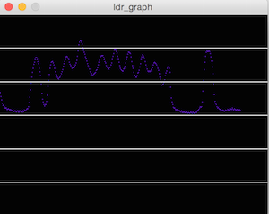

10 - Input devices
Intro
The assignment of this week was to create some boards to read from input devices.
Expanding the Hello Board
At first I decided to expand the Hello Board. Indeed, when not used for programming the pin of ICSP connector can be used for other purposes. For example the MISO pin has also an ADC converter, so it can be used to read from an analog sensor like a photoresistor. It corresponds to the Arduino analog pin 5 as you can see from the image below.

So, as I live far from the Fablab, I decided at first to make a prototype using jumpers. I used a photoresistor to read the light levels in the room. To read from it I had to make a voltage divider addign a 10k resistor. To read the values I printed them on the seria port. I programmed the board using the Arduino IDE and the SoftwareSerial library. I used an Arduino board without the microcontroller to have regulated +5V and to use the FTDI chip for the serial communication between the board and the computer. Here is the code:
Moreover I decided to visualize it on a graph. So I used Processing that is very helpful to make fast data visualization.

I started from this example then I customized it.As the message is a string I parsed it to an int. Then I mapped it to the dimension of the graph. You can find the code below:
I decided also to read the temperature using th LM35 sensor.

However using a float for the temperature value made the skech too big fot the ATTiny (4986Kb). So I used an int type and made other calculations in Processing.
To find the right temperature in Centigrades you have to use the formula temp = (5.0 * analogRead(tempPin) * 100.0) / 1024; or multiply the sensor value for 0.48828125.
The Fabkit Board
I decided to realize a board with multiple pins and more power and a shield (or daughterboard) to plug on it to connect input/output devices. I started from the Fabkit board , it has a ATMega 328P that is the same microcontroller used in the Arduino boards, with the advantage of having more pins and more memory. I milled the board and I programmed it using the FabISP and the Arduino IDE. To do this, looking at the datasheet and at the ICSP pinout, I connected the MISO, MOSI, RESET, SCK, GND and VCC (app pin in the lower side of the board) to the ICSP connector of the FabISP. As the FabISP doesn't provide power on the VCC pin I used the pin on the FTDI connector to power the board. I used an Arduino board without the microcontroller to have regulated +5V and to use the FTDI chip for the serial communication between the Fabkit board and the computer. I didn't follow the tutorial as it uses the 8MHz internal clock even if the board has a 20MHz resonator. I looked at a mapping of microcontroller pins to Arduino pins (figure below) and I made the led mounted on pin PB5 - PIN13 blink (Arduino blink example).

I had some problems with the serial communication that I wasn't able to solve. I receive strange characters. I tested different command as write and print with the same result.I checked also for short circuits but I had no result. Then I discovered that I put a wrong resonator on the board. So i had to modify the boards.txt file in the Arduino IDE changing the value of the microcontroller frequency. And then it worked fine.


Designing the shield
I decided to design a shield that could snap on the Fabkit board (using headers) to do this I started from the pin on the Fabkit. As I wanted to connect a light sensor and a temperature sensor (both analog) I looked for pins with ADC (analog digital converter) The ADC can turn analog values to discrete values (from 0 to 1023). On the right side of the Fabkit we have this pins (Arduino names): VCC, GND, A5, A4, A3, A2,A1 and A0. To connect the two sensor I need VCC, GND and two pins with ADC. So I decided to make a shiel that connects to adiacent pins (VCC,GND,A5 and A4). To connect the LDR i added a 10k resistor to create a voltage divider. The LDR is connected to the VCC and the resistor to ground so I have a "natural" behaviour as the number will increase with the light. For the temperature I used an LM35 (that I described above). It doesn't require any other components. So I designed the board with Eagle. However I did not find in the library the components I wanted to use. So I used other components with the same pinout: a phototransistor (2 pins) and a transistor (3 pins).

You can download the board and the schematic.
I had some problems because the holes exported by Eagle (even if the resolution was 2400 dpi) were too small (77px) to be recognized by the fabmodules. So I had to manually change the holes making it bigger (93px). The result was good:


Then, I connected the shield to the Fabkit and added a conditional statement to make the led on the board lights up at a certain threshold. I added the following code:
- ©
 Attribution, non-commercial, share alike.
Attribution, non-commercial, share alike. - Design: HTML5 UP